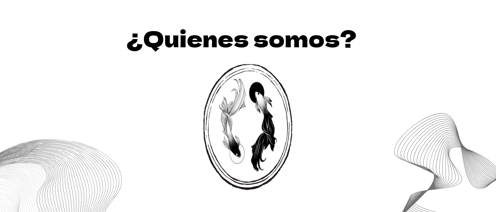
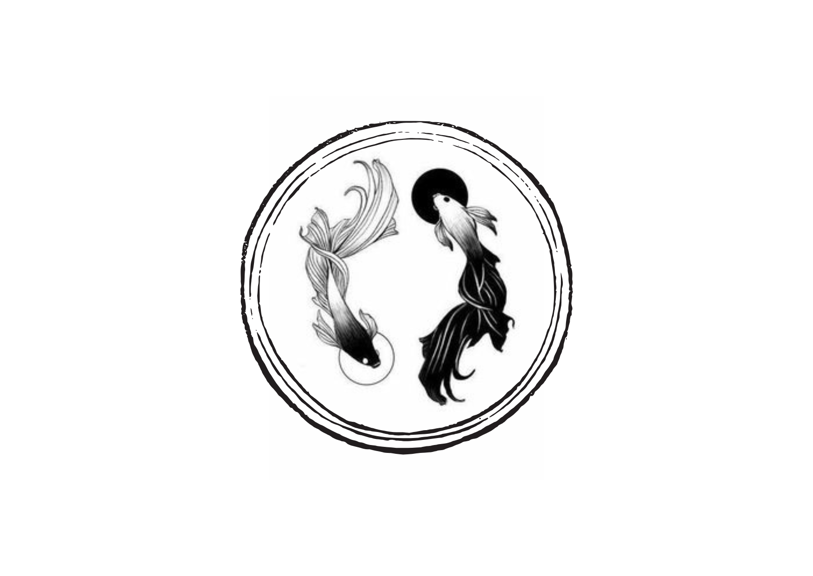
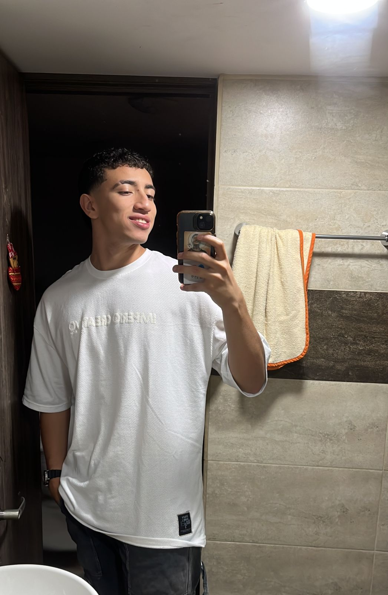

En Nexo, conectamos tu visión con resultados. Somos un equipo apasionado por la innovación digital y el crecimiento de negocios, comprometidos con ofrecer soluciones prácticas y efectivas para emprendedores y pequeñas empresas que desean destacar en el mundo digital.

Conectar las ideas y metas de nuestros clientes con resultados tangibles a través de servicios digitales integrales, que incluyen la creación de páginas web funcionales y estrategias de promoción efectivas, siempre guiados por la innovación, la calidad y un enfoque personalizado.
Ser el puente más confiable y accesible para que emprendedores y pequeñas empresas se destaquen en el mundo digital, ofreciendo soluciones innovadoras que impulsen su crecimiento y consolidación en el mercado.

El servicio de Nexo lo compone una sola persona: Sebastián González Campiño, quien es Ingeniero en Sistemas con una gran pasión por la tecnología y el desarrollo de soluciones digitales. A lo largo de mi carrera, he trabajado con dedicación para aprender y aplicar tecnologías innovadoras que ayuden a emprendedores y pequeñas empresas a destacar en el mundo digital.
Mi visión es proporcionar soluciones personalizadas, con un enfoque en la calidad y el compromiso. Me apasiona la tecnología porque me permite transformar ideas en proyectos reales, y siempre estoy en busca de nuevos retos que me ayuden a seguir creciendo.
En Nexo, mi objetivo es ofrecer servicios eficientes, efectivos y siempre a la vanguardia. Estoy aquí para ayudarte a llevar tu negocio al siguiente nivel, con soluciones digitales adaptadas a tus necesidades.